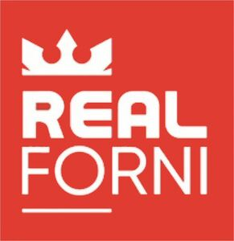

Trade Mark Journal No.2025/028 11 July 2025
WO0000001860630 (11)
Office of origin: Italy
Date of International Registration:4 December 2024
Date of designation in the UK:
4 December 2024

The trademark consists of the words "REAL FORNI" written in fanciful capital characters in white colour, above the letters "RE" of the word "REAL" is represented a crown in white colour, while the letters "FO" of the word "FORNI" are underlined, all on a red background.
The mark contains the colours red and white.
International priority date claimed: 27 November 2024
(Italy)
(302024000176223)
- Class 11
- Apparatus for lighting, heating, steam generating, cooking, refrigerating, drying, ventilating, water supply and sanitary purposes; igniters; hot air apparatus; drying apparatus and installations; cooling appliances and installations; refrigerating appliances and installations; cooking apparatus and installations; refrigerating apparatus and machines; kilns; apparatus for dehydrating food waste; desiccating apparatus; multicookers; refrigerating cabinets; framework of metal for ovens; cold storage rooms; freezers; drying installations; cooking rings; microwave ovens for industrial purposes; baking ovens; solar furnaces; roasting devices; steam generating installations; bread baking machines; bread-making machines; hotplates; refrigerating containers; refrigerators; kiln furniture [supports]; food steamers, electric; blast furnaces; combined refrigerating and freezing apparatus; cooking appliances; apparatus for refrigerating purposes; electric apparatus for dehydrating foodstuffs; cooling units; gas cookers; electric cooking ovens; commercial cooking ovens; diffusion kilns for industrial purposes; melting furnaces; furnaces; electric ovens; industrial ovens; refractory furnaces; rotary kilns; electric toaster ovens; fridge freezers; installations for cooking; drying installations; refrigerating machines; cooking hobs; deep freezing apparatus; steam superheaters [for industrial purposes].
REAL FORNI S.R.L.
Representative: STUDIO BONINI SRL, CORSO FOGAZZARO 8, I-36100 VICENZA (VI), ITALY